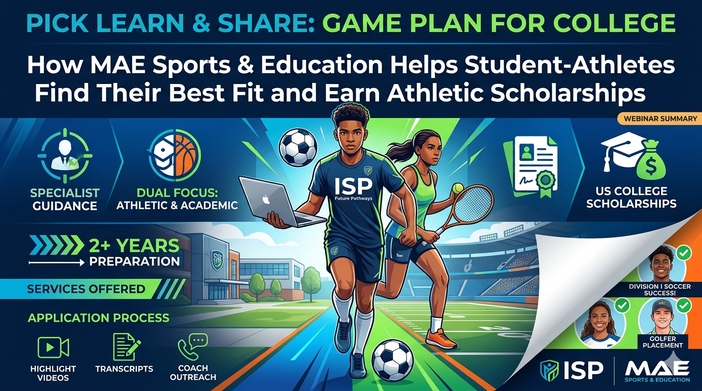

Game Plan for College: How MAE Sports & Education Helps Student-Athletes Find Their Best Fit and Earn Athletic Scholarships

Game Plan for College: How MAE Sports & Education Helps Student-Athletes Find Their Best Fit and Earn Athletic Scholarships
Speaker: Macarena (Mac) Aguirre — MAE Sports & Education · Host: Jo Fretwell, ISP Future Pathways
Event: ISP Future Pathways Webinar · Date: 19 May 2026 · Duration: ~41 minutes · Audience: ISP School Counsellors & Future Pathway Advisors
Most ISP schools encounter only one or two potential student-athletes per year who are interested in US sports scholarships — not enough volume to build deep in-house expertise. MAE Sports & Education exists to fill that gap. This webinar, delivered by Macarena Aguirre to ISP counsellors, covered the agency's services, the US athletic scholarship process end-to-end, academic entry requirements, success stories, and exactly how school counsellors can support student-athletes without needing to become experts themselves.
Section 1: What Makes MAE Different
MAE Sports & Education is a specialist agency that guides student-athletes through the process of securing places and athletic scholarships at US colleges and universities. Their approach is holistic: they work closely with the student, the family, and the school simultaneously.
- Dual focus: They work on both athletic and academic profiles at the same time.
- Partnership model: They build direct relationships with school counsellors, working alongside them rather than replacing them.
- Coach relationships: They communicate directly with US college coaches on behalf of student-athletes.
- Multilingual support: Services are available in both English and Spanish — important for ISP's diverse school network.
- School visits & fairs: MAE attends ISP Future Pathway festivals and can deliver bespoke webinars for individual schools.
Section 2: Services Offered
| Service | Description |
|---|---|
| Full Athletic Scholarship | Covers tuition, fees, room and board for four years. Packages range from partial ($10,000–$20,000/yr) to full rides (100%+, including pocket money), depending on athletic level. |
| Academic Scholarship for Athletes | For student-athletes who want to play sport but are not at elite level. MAE identifies universities where the student can compete and receive academic merit aid. |
| Walk-On Placement | For students already in the US admissions process who want to join a team without a scholarship. MAE connects them with coaches to become a non-scholarship team member. |
| Tier 1 University Athletic Process | Specialised support for students targeting the most competitive Division I programmes. |
| Gap Year Programmes | For talented athletes who need to improve grades or English first. MAE places them in structured gap year programmes abroad to prepare for a future US application. |
Section 3: The US College Sports Experience
The United States offers a unique environment for student-athletes that does not exist in the same way anywhere else. Key benefits:
- Students can continue competing in their sport — even if not at elite/professional level — while completing a four-year undergraduate degree.
- Scholarships are renewable for all four years of study.
- The system is flexible academically: students can usually choose their major freely.
- Each student-athlete typically has two advisors: a standard academic advisor and a dedicated athletic academic advisor who helps schedule courses around training and competition.
- Campus life is rich: dining, accommodation, gyms, sports facilities and social activities are often included as part of the scholarship package.
MAE emphasises to all student-athletes from the outset: "You are first and foremost a student." Athletics provide the pathway, but academic success is essential for eligibility and long-term benefit.
Regulatory update (2026): Under changes introduced by the Trump administration, student-athletes may now be eligible to compete for an additional year beyond the traditional four, including potentially during a Master's programme.
Section 4: Sports Covered & League Structure
MAE supports student-athletes across a very wide range of sports. The key message: "There is a spot for everyone — we just need to find the right fit."
| Organisation | Divisions | Notes |
|---|---|---|
| NCAA (National Collegiate Athletic Association) | Division I, II, III | The most well-known league. Division I is the most competitive. Divisions II and III offer more accessible entry points. |
| NAIA (National Association of Intercollegiate Athletics) | Division I, II | Strong alternative to NCAA; often more accessible for international students and those with BTECs. |
| NJCAA (Junior College) | Junior College (2 divisions) | Two-year colleges. MAE uses this option sparingly, mainly when grades or English level require a stepping-stone approach. |
Note: Some sports — including triathlon, rugby and fencing — are classified as 'emerging' in the US system. Scholarships may be limited or unavailable for these.
Section 5: Academic Entry Requirements
Academic eligibility is a key part of the process. Below are the minimum standards MAE works with:
| Test | Minimum Score | Notes |
|---|---|---|
| SAT | 1100 | Higher scores required for competitive schools (e.g. top-50 engineering programmes may require 1400+). |
| IELTS | Band varies | Higher scores (e.g. 7.5) needed for competitive programmes. |
| TOEFL | 90+ | For competitive universities. |
| Duolingo | Accepted | Accepted by many schools as an alternative to IELTS/TOEFL. |
In addition to test scores, MAE requires: high school transcripts (all years), letters of recommendation, a personal essay (MAE provides a dedicated academic advisor to support this), an athletic CV / resume of career to date, and highlight video and full game footage.
Standard A-level programmes are accepted across all divisions and leagues. Students should not drop subjects without consulting MAE first — NCAA eligibility is based on the specific combination of subjects studied. If a student athlete mentions changing their subject choices, alert MAE before the decision is finalised.
Section 6: The Athletic Scholarship Application Process
The process for securing an athletic scholarship is fundamentally different from a standard university application. The timeline is driven by coaches, not by university admissions deadlines. MAE recommends starting at least two years before the intended start date — rosters fill up quickly and scholarship budgets are finite.
| Step | Action | Who Leads |
|---|---|---|
| 1 | Student fills in MAE's evaluation questionnaire | Student / Counsellor |
| 2 | Free detailed evaluation: MAE assesses athletic and academic profile, scholarship potential and university fit | MAE |
| 3 | Consultation with family and school: understanding goals, budget, academic programme | MAE + Family + School |
| 4 | Contract signed; school granted permission to share academic data | Family + MAE |
| 5 | Academic profile creation: essays, transcripts, recommendation letters, CV | MAE Academic Advisor + Student |
| 6 | Athletic profile creation: highlight video, full game footage, competition history, CV | MAE Sports Agent + Student |
| 7 | University selection and coach outreach: MAE contacts coaches at target universities | MAE |
| 8 | Negotiation: MAE negotiates scholarship packages on behalf of the student | MAE |
| 9 | Offers shared with student and school; student makes final choice | Student + Family + Counsellor |
| 10 | Verbal commitment (can happen as early as October for the following year) | Student + Coach |
| 11 | Visa documentation support provided | MAE |
| 12 | Pre-departure event hosted by MAE | MAE |
| 13 | Ongoing support if circumstances change during or after the process | MAE |
The athletic portfolio is the most critical element. MAE builds this for each student but needs: competition videos from the past few years (informal parent recordings are fine — professional production is not required), full game/match recordings where possible, an athletic CV / career résumé, and photographs. MAE edits the footage into a professional highlight reel tailored to what coaches look for.
Section 7: Scholarships, Costs & MAE Fees
When MAE negotiates scholarships, they aim to cover tuition fees, university fees, and room and board. Scholarship value varies significantly:
- Top end: 100% full ride, including pocket money stipend
- Lower end: Partial scholarships of $10,000–$20,000 per year
| Stage | Cost | Notes |
|---|---|---|
| Initial evaluation | Free | MAE assesses the student's profile and advises on realistic options. No commitment required. |
| Full service (standard) | €3,500 | Complete process from profile creation through to placement and scholarship negotiation. |
| ISP partner rate | ≈ €3,150 | Reduced rate for families from ISP schools. |
| Reduced-scope service | Reduced (TBC) | For students who want MAE to contact coaches at specific target universities only. |
Section 8: How Counsellors Can Support Student-Athletes
MAE emphasised that the counsellor's role is supportive rather than technical. The key actions:
Identifying Potential Student-Athletes
- Listen for students who mention wanting to continue their sport at university, especially in the US.
- Ask basic questions: level of competition, clubs, how long they have been playing, how many hours per week.
- You do not need to assess their athletic level — MAE will do that. Your role is to flag the student to MAE.
Making the Referral
- Share the MAE evaluation questionnaire (QR code will be on the ISP SharePoint).
- Email or WhatsApp Macarena Aguirre directly with the student's details and school name.
- Alternatively, channel referrals through Jo Fretwell at ISP.
Ongoing Involvement
- Once the process starts, your main role is sharing academic documentation (transcripts, predicted grades, teacher references) — identical to what you would do for any US applicant.
- MAE will keep you informed of the student's progress. Being part of the process increases parent confidence and makes the experience more cohesive for the student.
Section 9: Success Stories
| Student Profile | Challenge | MAE Solution | Outcome |
|---|---|---|---|
| 17-year-old male footballer (Spain) | Wanted Division I soccer but did not meet academic eligibility requirements. | Placed at a Division II school for one year to develop academically and improve English. | Transferred to Division I on a full scholarship. Graduated and was drafted by LAFC (MLS). Now a professional footballer with a degree. |
| Female golfer | Strong academically; accepted to several universities but could not find the right sporting environment. | MAE identified a Division I programme with the right coaching culture. | Competing in Division I golf at a strong academic institution. |
| Female tennis player | Needed a top scholarship to make a US education financially viable. | MAE secured a high-value scholarship package through targeted coach outreach and a strong portfolio. | Studying in the US on a substantial scholarship, continuing competitive tennis. |
| Female footballer (insufficient English) | Talented athlete but English level was not yet strong enough for direct US admission. | Enrolled in a gap year programme abroad to improve English and strengthen her profile. | Successfully placed at a US university the following year with an athletic scholarship. |
Section 10: At a Glance — Counsellor Next Steps
| Action | Details |
|---|---|
| Access resources | Recording, slides and student/parent-facing leaflets are on the ISP Future Pathways SharePoint. |
| Identify current student-athletes | Review your cohort for students who compete regularly in any sport and may aspire to study in the US. |
| Share the questionnaire | For interested students, share the MAE evaluation questionnaire (free, no commitment). |
| Subject choice vigilance | For any student athlete considering A-level or subject changes, loop in MAE before decisions are finalised. |
| Plan a school visit (optional) | If you have multiple interested students, request a school visit or bespoke webinar from MAE via Jo Fretwell. |
"There is a spot for everyone — we just need to find the right fit."
Three Questions for Your Next Student Session
- When a student mentions wanting to "play sport at university in the US," do I ask enough follow-up questions to understand their level of commitment and competition history?
- Am I aware of the subject-choice risk — that changing or dropping A-level subjects can affect NCAA eligibility — and do I loop in MAE early enough?
- Have I identified whether any current students have an athletic profile worth a free MAE evaluation — even if they haven't raised it themselves?